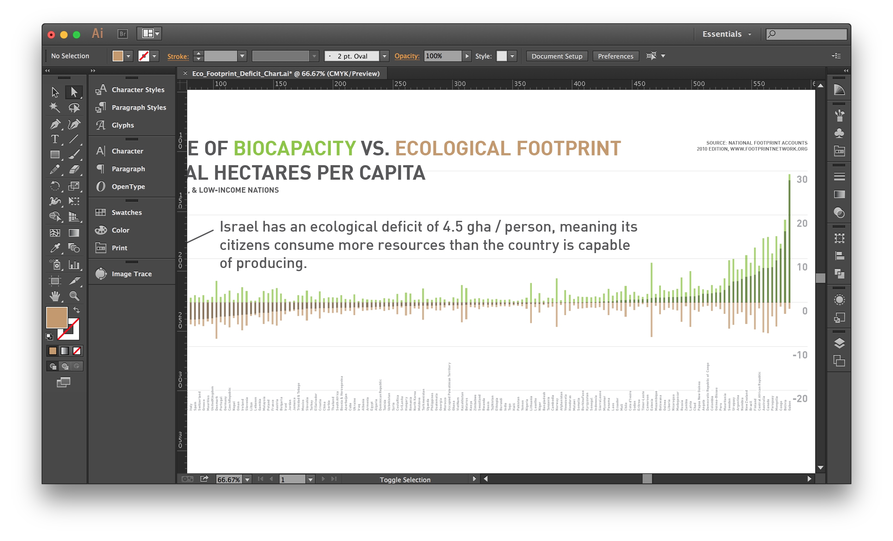

Excel
Data manupulation & sketch representation
Illustrator
Visual manipulation & styling
Processing
Data manupulation & sketch representation
D3.js
Visual manipulation & styling
QGIS
Geospatial data manupulation & sketch representation
Mapbox & Tilemill
Interactive geospatial representation
Revealing the hidden dimensions of the city
While the outcomes of planning often involve alterations of the physical world, much of the planning process is about understanding the less visible elements of the city and its systems.